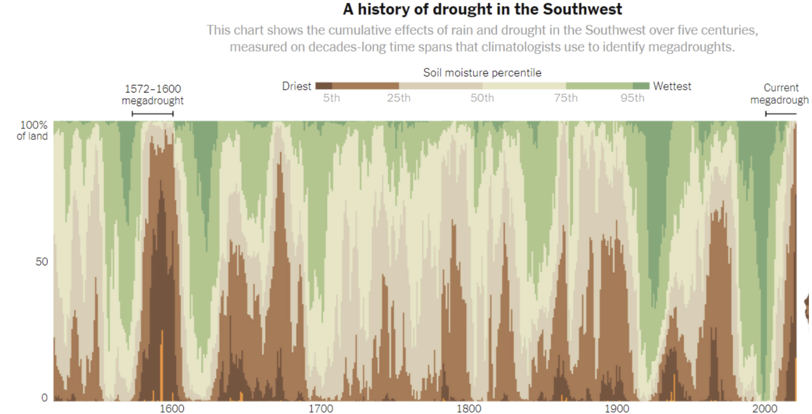

# A tibble: 8 × 4
species island body_mass_g bill_length_mm
<fct> <fct> <int> <dbl>
1 Adelie Dream 3650 39
2 Adelie Torgersen 2900 38.6
3 Gentoo Biscoe 5050 46.3
4 Adelie Dream 4300 41.1
5 Adelie Biscoe 4100 41.1
6 Gentoo Biscoe 5050 45.1
7 Chinstrap Dream 4050 49.3
8 Adelie Torgersen 4000 44.1
Final Exam Review Trivia
Kelly McConville
DATA 100
Week 14 | Spring 2026
Plan
Hex cookie decorating
Talk through upcoming exam
- Go to the Final Exam Guidance and Practice on Posit Cloud.
Trivia challenge
- 1 point for each correct answer
- Categories: Data Wrangling, Data Visualization, Modeling, Miscellaneous
- Prizes!
Hex Cookies!
Final Exam Guidance and Practice
Data Wrangling
Question 1: What is the R syntax for “not equal”?
Question 2: How many columns and how many rows will the wrangled data have?
Question 3: What’s a good dplyr function for sorting the rows of your dataset?
Question 4: What function should I use if I want to join two datasets and only keep rows that have a match for the key variable in both datasets?
Question 5: How many columns and how many rows will the wrangled data have?
# A tibble: 8 × 4
species island body_mass_g bill_length_mm
<fct> <fct> <int> <dbl>
1 Adelie Dream 3650 39
2 Adelie Torgersen 2900 38.6
3 Gentoo Biscoe 5050 46.3
4 Adelie Dream 4300 41.1
5 Adelie Biscoe 4100 41.1
6 Gentoo Biscoe 5050 45.1
7 Chinstrap Dream 4050 49.3
8 Adelie Torgersen 4000 44.1Question 6: Name a data wrangling function where the function name has only 1 character.
Data Visualization
Question 1: For each of the following three geoms, do we use “fill” or “color” if we want to color in (not just outline) a geom by the values of a variable: geom_point, geom_violin, geom_bar?
Question 2: Name two ways to address overplotting in a ggplot2 scatterplot.
Question 3: Identify the color palette type used in this graph.

Question 4: If I want to add a title to my ggplot, what layer do I need to add?
Question 5: What argument goes into geom_bar to convert the bars from raw counts to conditional proportions?
Question 6: When graphing a categorical variable with two categories, what colors does ggplot2 use by default?
Modeling
Question 1: Supppose I want to build a linear regression model for the body mass of a penguin. I plan to use species (Adelie, Gentoo, and Chinstrap) and bill length in my model with no interaction terms. When I run get_regression_table() on my model, how many rows will the output table have?
# A tibble: 333 × 8
species island bill_length_mm bill_depth_mm flipper_length_mm body_mass_g
<fct> <fct> <dbl> <dbl> <int> <int>
1 Adelie Torgersen 39.1 18.7 181 3750
2 Adelie Torgersen 39.5 17.4 186 3800
3 Adelie Torgersen 40.3 18 195 3250
4 Adelie Torgersen 36.7 19.3 193 3450
5 Adelie Torgersen 39.3 20.6 190 3650
6 Adelie Torgersen 38.9 17.8 181 3625
7 Adelie Torgersen 39.2 19.6 195 4675
8 Adelie Torgersen 41.1 17.6 182 3200
9 Adelie Torgersen 38.6 21.2 191 3800
10 Adelie Torgersen 34.6 21.1 198 4400
# ℹ 323 more rows
# ℹ 2 more variables: sex <fct>, year <int>Question 2: Holding all else constant, which will be wider: a prediction interval for a new observation or a confidence interval for the mean?
Question 3: When will a residual be equal to zero?
Question 4: What plot should we produce to check that the errors of our regression model are normally distributed?
Question 5: Interpret the coefficient associated with species: Chinstrap. (Recall the species are Adelie, Chinstrap, and Gentoo.)
# A tibble: 4 × 7
term estimate std_error statistic p_value lower_ci upper_ci
<chr> <dbl> <dbl> <dbl> <dbl> <dbl> <dbl>
1 intercept 200. 272. 0.738 0.461 -334. 735.
2 species: Chinstrap -877. 88.7 -9.88 0 -1052. -702.
3 species: Gentoo 597. 76.4 7.81 0 446. 747.
4 bill_length_mm 90.3 6.95 13.0 0 76.6 104.Question 6: Interpret the coefficient associated with bill_length_mm.
# A tibble: 4 × 7
term estimate std_error statistic p_value lower_ci upper_ci
<chr> <dbl> <dbl> <dbl> <dbl> <dbl> <dbl>
1 intercept 200. 272. 0.738 0.461 -334. 735.
2 species: Chinstrap -877. 88.7 -9.88 0 -1052. -702.
3 species: Gentoo 597. 76.4 7.81 0 446. 747.
4 bill_length_mm 90.3 6.95 13.0 0 76.6 104.